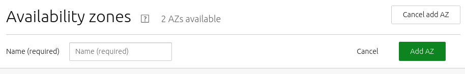

An availability zone is an organisational unit containing nodes, where each node is in exactly one zone. While in production, a machine can be allocated from a specific zone. Availability zones can be used for fault-tolerance, service performance, and power management. See Zone examples for more details.
A newly installed MAAS comes with a default zone which initially contains all nodes. You cannot remove the ‘default’ zone or change its name, but you can create new zones and assign machine to them. You can safely ignore this article if you’re not interested in leveraging zones.
To create a zone, navigate to the ‘AZs’ page of the web UI and use the ‘Add AZ’ button. Enter a name for the zone and click ‘Add AZ’.
>
To edit a zone, on the ‘AZs’ page, select a zone and use the ‘Edit’ button. This selection allows you to change the name and description for the added (or edited) zone.
To delete a zone, on the ‘AZs’ page, select a zone and use the ‘Delete AZ’ button. Doing so will also move any potential machine associations to the default zone.
To assign a machine to a zone, from the ‘Machines’ page, select a machine (or multiple machines) and choose ‘Set zone’ using the ‘Take action’ button. After selecting a zone hit the ‘Set zone…’ button to apply the change.
You can also edit a machine’s ‘Configuration’ page to change its zone.
Both ways are available in the API as well: edit an individual machine through a PUT request to the machine’s URI, or set the zone on multiple machines at once by calling the set_zone operation on the machines endpoint.
To deploy in a particular zone, call the acquire method in the region-controller API <region-controller-api> as before, but pass the zone parameter with the name of the zone. This method will allocate a machine in that zone, or fail with an HTTP 409 (“conflict”) error if the zone has no machines available that match your request.
Alternatively, you may want to request a machine that is not in a particular zone or one that is not in any of several zones. To do that, specify the not_in_zone parameter to acquire. This parameter takes a list of zone names; the allocated machine will not be in any of them. Again, if that leaves no machines available that match your request, the call will return a “conflict” error.
It is possible, though not usually useful, to combine the zone and not_in_zone parameters. If your choice for zone is also present in not_in_zone, no machine will ever match your request. Or if it’s not, then the not_in_zone values will not affect the result of the call at all.